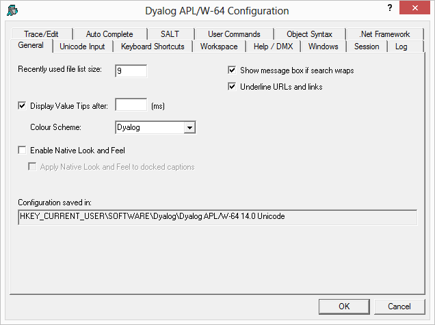
Table 47: Configuration dialog: General
| Label | Parameter | Description |
|---|---|---|
| Show line numbers | lines_on_functions | Determines whether or not line numbers are shown in edit/trace windows |
| Recently used file list size | file_stack_size | Specifies the number of the most recently used workspaces displayed in the File menu. |
| Display Value Tips after | ValueTips/Delay | Specifies the delay before APL will display the value of a variable or the code for a function when the user hovers the mouse over its name. |
| Colour Scheme | ValueTips/ ColourScheme | Specifies the colour scheme used to display the value of a variable or the code for a function when the user hovers the mouse over its name. |
| Enable Native Look and Feel | XPLookAndFeel | Specifies whether or not Native Look and Feel is enabled. This changes the appearance of user-interface controls such as Buttons in both the Session and the Dyalog GUI. |
| Apply Native Look and Feel to docked captions | XPLookAndFeelDocker | Specifies whether or not Native Look and Feel is honoured when drawing the title bars of docked windows, including docked Session windows. |
| Underline URLs and links | URLHighlight | Specifies whether or not URLs and links are highlighted in Session and Edit windows. |
| Configuration saved in | inifile | Specifies the full pathname of the registry folder used by APL |
If this option is selected, valid URLs are identified when the cursor is in the Session or in an Edit or Trace window. When the mouse pointer is over a URL, the URL is underscored and the appropriate items in the Session Popup menu are activated. These allow you to open the link or copy it to the clipboard.
You may also open a URL using Ctrl+Click (Left Mouse button).
Currently a URL string is defined to be a string starting with any of the following strings:
Unicode Edition can optionally select your APL keyboard each time you start APL.
To choose this option, select one of your installed APL keyboards, enable the Activate selected keyboard checkbox, then click OK
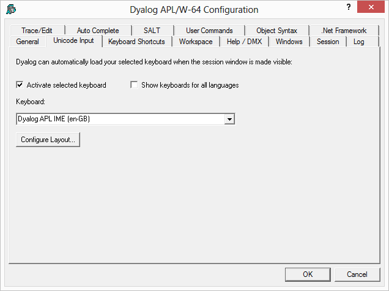
| Label | Parameter | Description |
|---|---|---|
| Activate selected keyboard | InitialKeyboardLayoutInUse | 1 = automatically select the specified APL keyboard on start-up. 0 = no action |
| Show keyboards for all Languages | InitialKeyboardLayoutShowAll | 1 = show list of all installed keyboards 0 = show only the Dyalog keyboards |
| Keyboard | InitialKeyboardLayout | the name of the APL keyboard to be selected. |
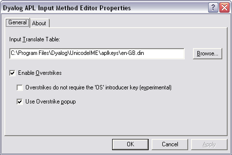
Table 48: Configuration dialog: Unicode Input/Configure Layout
| Label | Parameter | Description |
|---|---|---|
| Enable Overstrikes | ResolveOverstrikes | 1 = enable overstrikes. 0 = disable overstrikes |
| Overstrikes do not require the <OS> key | 1 = IME identifies overstrike operation automatically 0 = IME requires the <OS> key to signal an overstrike operation | |
| Use Overstrike popup | OverstrikesPopup | 1 = enable the overstrike popup. 0 = disable the overstrike popup |
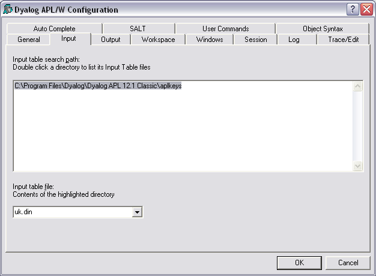
Table 49: Configuration dialog: Keyboard
| Label | Parameter | Description |
|---|---|---|
| Input table search path | aplkeys | A list of directories to be searched for the specified input table |
| Input table file | aplk | The name of the input table file (.DIN) |
Table 50: Configuration dialog: Output
| Label | Parameter | Description |
|---|---|---|
| Output table search path | apltrans | A list of directories to be searched for the specified output table |
| Output table file | aplt | The name of the output table file (.DOT) |
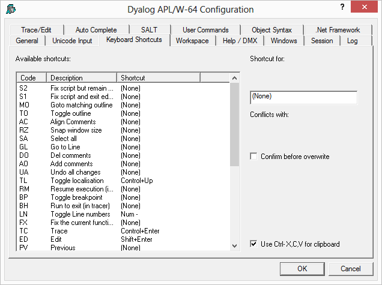
To alter the keystroke associated with a particular action, simply select the action required and press the keystroke. For example, to change the keystroke associated with the action <UA> (undo all changes) from (None) to Ctrl+Shift+u, simply select the corresponding row in the list and press Ctrl+Shift+u. If Confirm before Overwrite is checked, you will be prompted to confirm or cancel before each and every change is written back to the registry.
Note that clicking on the column headings will sort on that column; shift and mouse click will sort in reverse order.
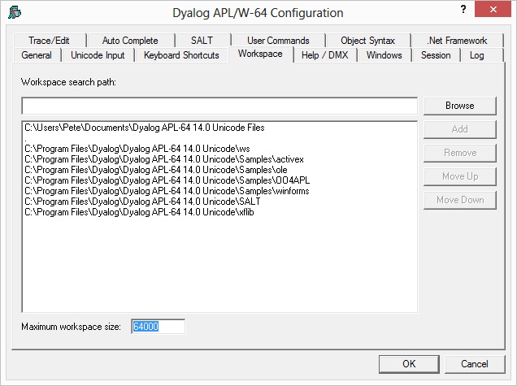
Table 51: Configuration dialog: Workspace
| Label | Parameter | Description |
|---|---|---|
| Workspace search path | wspath | A list of directories to be searched for the specified workspace when the user executes )LOAD wsname. "." must be included in order to load workspaces from the current directory |
| Maximum workspace size | maxws | The maximum size of the workspace. Default is 64000 (KiB). Size is defined as an integer value followed by one of K, M, G, T, P or E. If no character is included, units default to K (Kilobytes) |
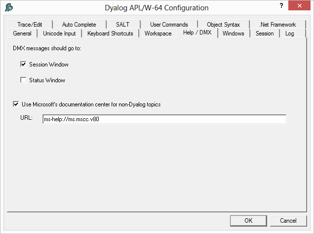
Table 52: Configuration dialog: Help/DMX
| Label | Parameter | Description |
|---|---|---|
| DMX messages should go to | DMXOUTPUTONERROR | If checked, these boxes cause APL to display ⎕DMX messages in the corresponding window(s). |
| Use Microsoft's documentation centre for non-Dyalog topics | UseDefaultHelpCollection | If this option is checked, APL will look for help at Microsoft's documentaion center for the the current string under the cursor. |
| URL | DefaultHelpCollection | The url for the documentation center. |
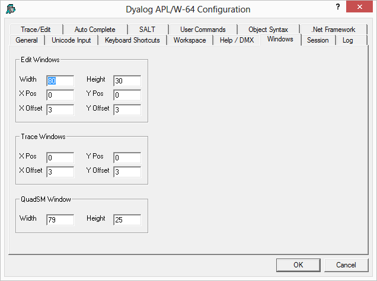
Table 53: Configuration dialog: Windows (Edit Windows)
| Label | Parameter | Description |
|---|---|---|
| Width | edit_cols | The maximum number of rows displayed in a new edit window |
| Height | edit_rows | The maximum number of columns displayed in a new edit window |
| X Pos | edit_first_x | The initial horizontal position in characters of the first edit window relative to the Session window |
| Y Pos | edit_first_y | The initial vertical position in characters of the first edit window relative to the Session window |
| X Offset | edit_offset_x | The initial horizontal position in characters of the second and subsequent edit windows relative to the previous one |
| Y Offset | edit_offset_y | The initial vertical position in characters of the second and subsequent edit windows relative to the previous one |
Table 54: Configuration dialog: Windows (Trace Windows)
| Label | Parameter | Description |
|---|---|---|
| X Pos | trace_first_x | The initial horizontal position in characters of the first trace window relative to the Session window |
| Y Pos | trace_first_y | The initial vertical position in characters of the first trace window relative to the Session window |
| X Offset | trace_offset_x | The initial horizontal position in characters of the second and subsequent trace windows relative to the previous one |
| Y Offset | trace_offset_y | The initial vertical position in characters of the second and subsequent trace windows relative to the previous one |
Table 55: Configuration dialog: Windows (QuadSM Window)
| Label | Parameter | Description |
|---|---|---|
| Width | sm_cols | The width of the ⎕SM and prefect windows |
| Height | sm_rows | The height of the ⎕SM and prefect windows |
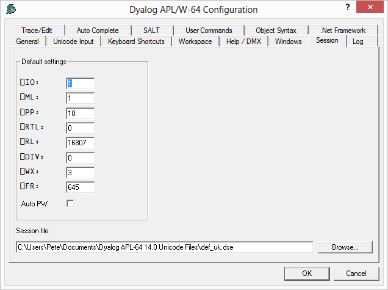
Table 56: Configuration dialog: Session
| Label | Parameter | Description |
|---|---|---|
| ⎕IO | default_io | The default value of ⎕IO in a clear ws. |
| ⎕ML | default_ml | The default value of ⎕ML in a clear ws |
| ⎕PP | default_pp | The default value of ⎕PP in a clear ws. |
| ⎕RTL | default_rtl | The default value of ⎕RTL in a clear ws. |
| ⎕RL | default_rl | The default value of ⎕RL in a clear ws. |
| ⎕DIV | default_div | The default value of ⎕DIV in a clear ws. |
| ⎕WX | default_wx | The default value of ⎕WX in a clear ws. |
| Auto PW | auto_pw | If checked, the value of ⎕PW is dynamic and depends on the width of the Session Window. |
| Session file | session_file | The name of the Session file in which the definition of your session (⎕SE) is stored. |
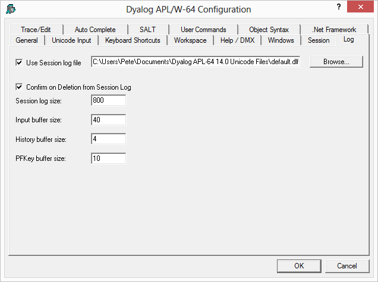
Table 57: Configuration dialog: Log
| Label | Parameter | Description |
|---|---|---|
| Use Session log file | log_file_inuse | Specifies whether or not the Session log is saved in a session log file |
| Use Session log file | log_file | The full pathname of the Session log file |
| Confirm on Deletion from Session log | confirm_session_delete | Specifies whether or not you are prompted to confirm the deletion of a line from the Session (and Session log). |
| Session log size | log_size | The size of the Session log buffer. |
| Input buffer size | input_size | The size of the buffer used to store marked lines (lines awaiting execution) in the Session. |
| History size | history_size | The size of the buffer used to store previously entered (input) lines in the Session |
| PFKey buffer size | pfkey_size | The size of the buffer used to store PFKey definitions (⎕PFKEY) |
Note: The value of size-related values defined in the above table is specified as an integer value followed by one of K, M, G, T, P or E. The default, where no character is included, is K (Kilobytes).
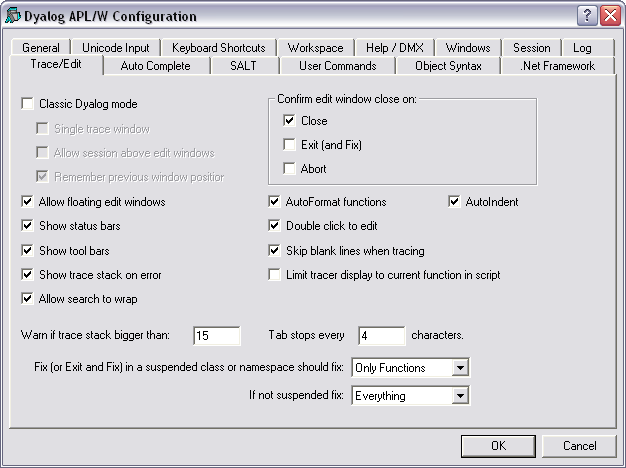
Table 58: Configuration dialog: Trace/Edit
| Label | Parameter | Description |
|---|---|---|
| Classic Dyalog mode | ClassicMode | Selects pre-Version 9 behaviour for Edit and Trace windows |
| Allow session above edit windows | SessionOnTop | Specifies whether or not the Session may appear on top of Edit and Trace Windows |
| Single trace window | SingleTrace | Specifies whether or not there is a single Trace window |
| Remember previous window position | ClassicModeSavePosition | Specifies whether or not the current size and location of the first of the editor and tracer windows are remembered in the registry for next time. |
| Allow floating edit windows | DockableEditWindows | Allows individual Edit windows to be undocked from (and re-docked in) the main Edit window |
| Show status bars | StatusOnEdit | Specifies whether or not status bars are displayed along the bottom of individual Edit windows |
| Show tool bars | ToolBarsOnEdit | Specifies whether or not tool bars are displayed along the top of individual Edit windows |
| Show trace stack on error | Trace_on_error | Specifies whether or not the Tracer is automatically invoked when an error or stop occurs in a defined function |
| Search Wraps around | WrapSearch | Specifies whether or not Search/Replace in the Editor stops at the top or bottom of the text, or continues from the start or end as appropriate. |
| Warn if trace stack bigger than | Trace_level_warn | Specifies the maximum stack size for automatic deployment of the Tracer. |
| Confirm edit window close on Close | confirm_close | Specifies whether or not a confirmation dialog is displayed if the user alters the contents of an edit window, then closes it without saving |
| Confirm edit window close on Edit (and Fix) | confirm_fix | Specifies whether or not a confirmation dialog is displayed if the user alters the contents of an edit window, then saves it using Fix or Exit |
| Confirm edit window close on Abort | confirm_abort | Specifies whether or not a confirmation dialog is displayed if the user alters the contents of an edit window, then aborts using |
| Autoformat functions | AutoFormat | Selects automatic indentation for Control Structures when function is opened for editing |
| Autoindent | AutoIndent | Selects semi-automatic indentation for Control Structures while editing |
| Double-click to Edit | DoubleClickEdit | Specifies whether or not double-clicking over a name invokes the editor |
| Skip blank lines when tracing | SkipBlankLines | If enabled, this causes the Tracer to automatically skip lines that contain no executable statement. |
| Limit tracer display to current function in script | AddClassHeaders | When Tracing the execution of a function in a script, the Tracer displays either just the first line of the script and the function in question (option enabled), or the entire script (option disabled). |
| Paste text as Unicode (Classic Edition only) | UnicodeToClipboard | Specifies whether or not text transferred to and from the Windows clipboard is to be treated as Unicode |
| Tab stops every | TabStops | The number of spaces inserted by pressing Tab in an edit window |
| Exit and fix ... | See Fixing Scripts below | |
| If not ... | See Fixing Scripts below |
When using the Editor to edit a script such as a Class or Namespace you can specify whether, when you Fix the script and Exit the Editor, just the functions in the script are re-fixed, or whether the whole script is re-executed, thereby re-initialising any Fields or variables defined within.
These two actions always appear in the Editor File menu, but you can specify which is associated with the <EP> (Esc) key by selecting the appropriate option in the drop-downs labelled:
In both cases, you may select either Only Functions or Everything.
The label for the corresponding items on the Editor File menu (see User's Guide: Editor (The File Menu, editing a script)) will change according to which behaviour applies. Note that if you specify a keystroke for <S1> in the Keyboard Shortcuts tab, this will be associated with the unselected action.
Note: To enter values in the OK Key and Cancel Keyfields, click on the field with the mouse and then press the desired keystroke.
Table 59: Configuration dialog: Auto Complete
| Label | Parameter | Description |
|---|---|---|
| Use Auto Complete | Enabled | Specifies whether or not Auto Completion is enabled. |
| Make suggestions after | PrefixSize | Specifies the number of characters you must enter before Auto Completion begins to make suggestions |
| Delay completion for | KeyboardInputDelay | Specifies the delay in milliseconds before Auto Completion begins to make suggestions |
| Suggest up to | Rows | Specifies the maximum number of rows (height) in the AutoComplete pop-up suggestions box. |
| Show up to | Cols | Specifies the maximum number of columns (width) in the AutoComplete pop-up suggestion box |
| Keep History | History | Specifies whether or not AutoComplete maintains a list of previous AutoCompletions. |
| History Length | HistorySize | Specifies the number of previous AutoCompletions that are maintained |
| Include filenames | ShowFiles | Specifies whether or not AutoCompletion suggests directory and file names for )LOAD, )COPY and )DROP system commands. |
| OK Key | CompleteKey1 CompleteKey2 | Specifies two possible keys that may be used to select the current option from the Auto Complete suggestion box. |
| Cancel Key | CancelKey1 CancelKey2 | Specifies two possible keys that may be used to cancel (hide) the Auto Complete suggestion box. |
| Common Key | CommonKey1 | Specifies the key that will auto-complete the common prefix. This is defined to be the longest string of leading characters in the currently selected name that is shared by at least one other name in the Auto Complete suggestion box. |
SALT is the Simple APL Library Toolkit, a simple source code management system for Classes and script-based Namespaces. SPICE uses SALT to manage development tools which “plug in” to the Dyalog session
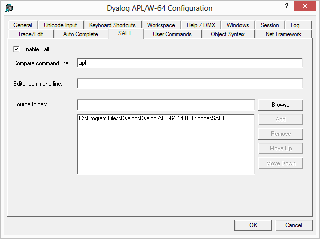
Table 60: Configuration dialog: SALT
| Label | Parameter | Description |
|---|---|---|
| Enable Salt | AddSALT | Specifies whether or not SALT is enabled |
| Compare command line | CompareCMD | The command line for a 3rd party file comparison tool to be used to compare two versions of a file. See note. |
| Editor | Editor | Name of the program to be used to edit script files (default "Notepad"). |
| Class source folders | SourceFolder | Sets the SALT working directory; a list of folders to be searched for source code. Include "." on a separate line to include source files from the current working directory |
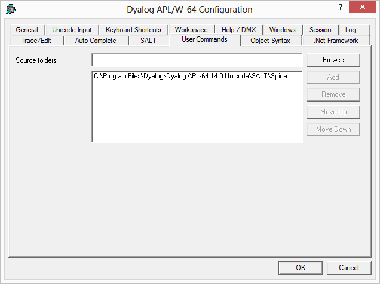
This page is used to specify and organise a list of folders that contain User-Command files. When you issue a User Command, these folders will be searched for the source of the command in the order in which they appear in this list.
Table 61: Configuration dialog: User Commands
| Label | Parameter | Description |
|---|---|---|
| Source Folders | SALT\CommandFolder | Use this field to add folders to the list of folders that will be searched for User Commands. |
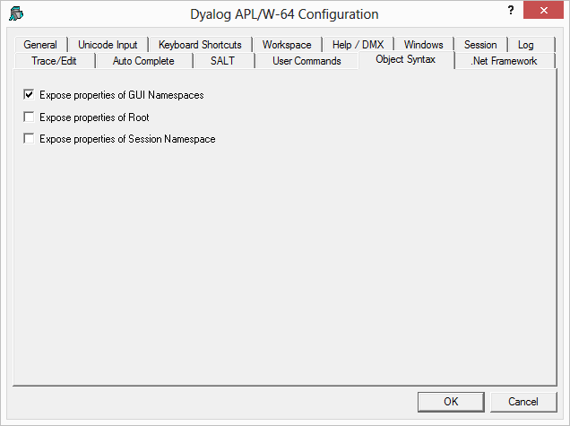
The Object Syntax tab of the Configuration dialog is used to set your default preferences for Object Syntax.
The Object Syntax settings for the current workspace are reflected by the Object Syntax submenu of the Options menu. Use Options/Object Syntax to change them. These settings are saved in the workspace.
Table 62: Configuration dialog: Object Syntax
| Label | Parameter | Description |
|---|---|---|
| Expose properties of GUI Namespaces | default_wx | Specifies the value of ⎕WX in a clear workspace. This in turn determines whether or not the names of properties, methods and events of GUI objects are exposed. If set (⎕WX is 1), you may query/set properties and invoke methods directly as if they were variables and functions respectively. As a consequence, these names may not be used for global variables in GUI objects. |
| Expose properties of Root | PropertyExposeRoot | Specifies whether or not the names of properties, methods and events of the Root object are exposed. If set, you may query/set the properties of Root and invoke the Root methods directly as if they were variables and functions respectively. As a consequence, these names may not be used for global variables in your workspace. |
| Expose properties of Session Namespace | PropertyExposeSE | Specifies whether or not the names of properties, methods and events of the Session object are exposed. If set, you may query/set the properties of ⎕SE and invoke ⎕SE methods directly as if they were variables and functions respectively. As a consequence, these names may not be used for global variables in the ⎕SE namespace. |
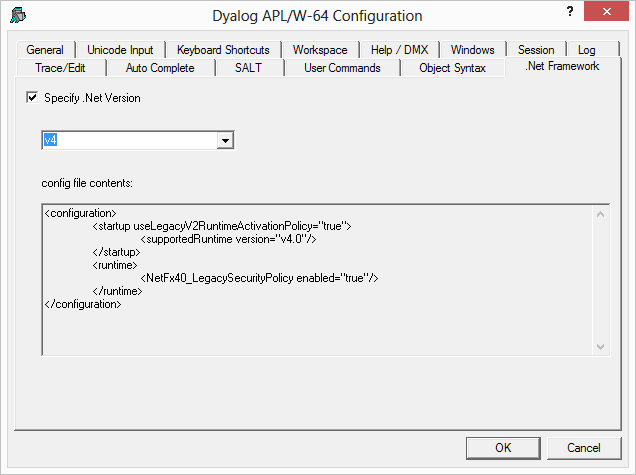
This dialog box allows you to specify which version of the .NET Framework you want to use with Dyalog APL.
If Specify .NET Version is selected, APL will display the versions of the .NET Framework that are installed in the combo box below.
Choose the version you require and click OK.
Unlike the other configuration dialogs, which typically set values in the Registry, this dialog creates a configuration file dyalog.exe.config in the same directory as the Dyalog APL program. Note the following:
The dialog box shows the contents of this file as illustrated above.